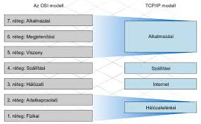

Az OSI (Open Systems Interconnection) modell célja a hálózati kommunikáció szabványosítása és struktúrális egyszerűsítése. A modell egy hétrétegű keretrendszert kínál, amely hatékonyan osztja fel a hálózati folyamatokat rétegekre, segítve a különböző hálózati eszközök és rendszerek összekapcsolását és interoperabilitását. Emellett elősegíti a hálózati problémák azonosítását és kezelését, mivel a rétegek közötti határok jól definiáltak. Az OSI modell nemzetközi szabványként elfogadott, ami lehetővé teszi a világszerte alkalmazható és elfogadott hálózati kommunikáció fejlesztését és implementálását. Összességében az OSI modell a hálózati rendszerek tervezését és karbantartását egyszerűsíti, valamint elősegíti az összekapcsolhatóságot és a hatékony adatátvitelt.
